Note: this first chapter is quite long and wordy. I break down various aspects of the script system, Lua scripting and programming in general. This is to minimize the learning curve as much as possible, allowing everyone, even those without a programming background, to follow along. I also try to be “witty” with the reader and offer a bit of humor when appropriate. Successive chapters will progressively involve less hand-holding, as I will assume the readers are already familiar with what I am talking about after working through earlier examples. I did my best to ensure that whatever I am skipping over has been covered at least once, or even several times, beforehand.
Some more proficient Lua users might get annoyed at me stating the obvious too often or hammering on a point far beyond what’s necessary. But I would ask you to consider that these talkative explanations for the “obvious” things are not for an experienced veteran like yourself, but rather for beginners that have not yet programmed in any real scripting language and are just about to have their first experience doing so. Just skim past the sections which you feel are being too drawn out for your taste. Thank you for your patience!
Finally, we get into the good stuff. After all that boring (but important) theory of the plugin’s particle system and the mundane summary of the Lua language, we begin the practical part of the tutorial series, where I give example implementations of various particle effects and talk you through them, step by step. We will start slow with nothing especially fancy, but as we build up our knowledge, we will be capable of making some really mind-blowing things soon enough, I promise!
The tutorials (as you will see for yourself) will take the form of doing something with a naïve or an intuitive-but-wrong approach, me explaining why it’s wrong or how to improve it, and then improving it in the next iteration. These iterations can happen any number of times, but at the end of each example, I will leave the complete, working code for the final iteration of whatever effect we were making. My one request is that you don’t go directly for this final code with your friends ‘copy’ and ‘paste’, but actually work through the examples, studying the explanations and only then comparing what you have with the final code as reference (…please? I worked really hard on making these tutorials!)
I will gradually introduce new features and functions as we need them, instead of dumping this information on you all at once. In doing so, I will sometimes take short tangents from the main topic to explain how these features work and offer more insight on them. This could be perceived as a bit chaotic, but there are so many different aspects to touch on that it’s nearly impossible to present this information in a completely linear fashion.
As this chapter is meant to help you take your first steps in particle scripting, it will show how to recreate an effect that could also be more or less achieved with FLEP custom smoke emitter OCBs, hence the title of this chapter.
As our very first particle effect, we will make a very simple, sprite-based volumetric dust effect, to be placed in a room or (later) to spawn around Lara herself wherever she goes. Such an effect will only require an initialization (init) function, at least in its most basic form. Let’s ask ourselves the following question: what would we need to create a dust effect? Well, we could spawn sprite particles with a dust-like sprite texture at random positions. They will float about for a brief moment before disappearing. For now, let’s assume that the particles will not do anything else after being spawned, just float around for a few seconds and then disappear.
Seems rather simple in concept, right? Let’s get at it with the coding, then!
Let’s begin our adventure by creating a new, empty Lua file. You can do this by creating an empty text file in Notepad and changing the extension to .lua afterwards, or directly saving an empty file with the .lua (Lua source file) extension in Notepad++.
We give our file the same name as the .tr4 level file it will be paired with (and in which we want to use our scripted effects). Since I will be using my particles in the tut1.tr4 level, I’ll name it tut1.lua. You should name it according to your own level file, of course (e.g. cursedtemple.tr4 → cursedtemple.lua).
To create any kind of particle effect, regardless of what it is, we must first define a particle group to which our particles will belong.
With the empty Lua file opened in your text editor of choice, we’ll start by declaring a local variable with no assigned value yet, which will later hold our dust particle group (I’ll explain why in a bit).
Let’s fittingly name this variable dust:
local dust -- declaration of our particle group variable
After this declaration, the name dust becomes a recognizable variable name to the portion of the script underneath it. We also need this local specification in front, since all variables must be declared local (recall the Lua Crash Course in the section on variables, where we discussed local variables). We will give it a proper value later, but the script requires this upfront mentioning of dust as a local variable (I know it looks confusing without assigning any value to the variable, but you will get used to it. Think of it as telling Lua – I will be creating a new particle group with this name soon, please be aware of that).
A particle group’s most important properties are an init function and update function. We can start writing our init function in the script, below the dust group variable. We will recall how to write a function in Lua from the Lua Crash Course. A suitable init function is one that does not take any arguments and does not return any values, either. On top of that, it also needs the local keyword in front, as functions, just like variables, must be local. So we can start with something like this:
local dust -- declaration of our particle group variable
local function dustInit() end
For now this function is empty, since it has no body and is immediately followed by the end keyword. But don’t worry, we’ll be giving it some proper contents very soon. Because it’s empty at the moment, it will simply not do anything.
In regards to the name of the function, it’s entirely up to us. My own suggestion for a function naming convention is to indicate the group the function belongs to and the type of function (examples could be dustInit or dust_init for the init of dust particles, dustUpdate or dust_update for the update of dust particles). It will help you keep track of what each function is responsible for when your particle scripts become much larger. But it’s only a suggestion, you may use whatever naming convention you wish.
While we’re at it, we can also create our update function stub.
The update function takes only one argument. Within this tutorial series we always name this argument part as a convention, but in reality it can be any name that’s valid in Lua, including p , myPart or xZvDf42_517. It’s not important which name you use, as long as it will be meaningful to you and potentially to someone else who will read the script you wrote (so perhaps xZvDf42_517 is not that good of a name, after giving it more consideration).
Additionally, you should be cautious to not use a name that was already used before for something else in the script. Such incidents are called name collisions and they will most likely lead to script errors down the line (keep in mind how easy it is to overwrite variables by accident).
Anyway, here are both of our functions defined:
local dust -- declaration of our particle group variable
local function dustInit()
end
local function dustUpdate(part)
end
It would seem that we have everything important needed in the particle group definition. Let’s define it now!
To do so, we will call a premade particle API function, createGroup(). This function instructs the particle system to create a new particle group for us. The function takes two arguments, the first argument is the name of the init function, the second is the name of the update function. The function returns a particle group object, which we can assign to a variable (in our case, the variable dust). Below our own init and update functions, we add the line:
local dust -- declaration of our particle group variable
local function dustInit()
end
local function dustUpdate(part)
end
-- creation of our particle group and assigning it to the variable
dust = createGroup(dustInit, dustUpdate)
And we’re done, we’ve successfully created our first particle group and stored it in the dust variable! But you may be thinking to yourself, couldn’t we have immediately done:
local dust = createGroup(dustInit, dustUpdate)
in the first line? Well, if we could use global variables, we could get away with this, no problem. But as was already brought up in the Lua Crash Course, we only have local variables at our disposal. You see, Lua scripts are parsed starting from the top towards the bottom. If Lua encounters a name it has not seen yet (as would be the case with dustInit and dustUpdate in the call to the createGroup() function), it assumes we’re referring to a global variable. But… we’ve established we can’t use those!
So what do we do to tell Lua that we’re talking about local variables and not global ones? We “mention” (declare) the local group variable at the top, without assigning any value to it. For Lua, this is enough, it will now know we’re speaking of a local variable whenever it sees that particular name.
But what if we *really* wanted to have local dust = createGroup(dustInit, dustUpdate)? We can do that, no problem, but in such case we must signal that the function names (dustInit, dustUpdate) are local, without even defining these functions yet:
local dustInit, dustUpdate
local dust = createGroup(dustInit, dustUpdate)
As you see, there’s no way around it. Something has to be declared as local, but with no value, before calling the createGroup() function. So be sure to have the local variable declaration, either for the group variable or the init and update functions above the call to the createGroup() API function (otherwise you’ll get nasty scripting errors).
The init and update functions have been defined, but… neither of them are really doing anything, given their bodies (i.e. sets of instructions) are empty! Rest assured, it’s fine to give empty functions like this to a group, there’s nothing wrong with doing such a thing. But since we are starting simple and won’t really need an update function for our dust particles (for now, at least), we can go a step further – we don’t even need to specify any update function in createGroup(), either.
Yes, I’ve tricked you! Functions are in fact entirely optional for particle groups. You can even create particle groups without specifying an update OR init function for them (why you would ever want to do this will be explained in due time).
To indicate that we are not specifying a function in createGroup(), we pass the special Lua value nil in its place. This effectively tells createGroup() – “we don’t want to use an (init / update) function for this particle group” (in this context it’s similar to IGNORE or -1 in TRNG scripts).
What about our actual dustUpdate() function that we’ve worked very hard on, though? What if we comment it out for now, with the multi-line comment we know and love. This way we don’t get rid of it completely, in case we want to have one later (hint hint, we will, in Chapter 2). Our script should now look something like this:
local dust -- declaration of our particle group variable
local function dustInit()
end
--[[
local function dustUpdate(part)
end
--]]
-- creation of our particle group and assigning it to the variable
dust = createGroup(dustInit, nil) -- passing nil in place of our dustUpdate
Again, you can also keep using an empty function in the group definition if you prefer, it effectively leads to the same outcome. But I think there is no need for creating a function that does nothing just for the sake of it, when it’s not even needed. Hence I prefer to pass nil for these unwanted functions instead. It involves less typing, which is great for me, since I’m lazy.
Either way, while we may not need an update function currently, we most certainly need an init function – how else will we get the dust particles to spawn, after all?
Init functions, unlike update functions, generally take no arguments (there are specific cases where init will receive a single argument, although I will make note of this when it becomes relevant in later chapters). If we recall the purpose of the init function, it is to create a particle and initialize its properties, like position, sprite texture, size and color. The init function does not return any values (while it can technically return them, there is simply no purpose to it, this returned value won’t be needed).
Let’s begin with creating a new sprite-type particle. This is accomplished through another API function, createSpritePart(). It returns a blank-slate particle instance of a given group, so it’s then our job to initialize the particle’s properties one by one. The function takes a single argument, which is the name of the particle group variable. In our case this will be the variable dust, since we want to create a particle instance of that group (and it’s the only group we have right now, anyway…)
We assign the particle instance returned from createSpritePart() to a variable, which we could name however we want. Again, as a convention, we name this variable part (but you can just as well use any other name):
local function dustInit()
local part = createSpritePart(dust) -- create a particle of the "dust" group
end
By the way, from this point onward, I will not display the whole script in each snippet, but only the sections relevant to what we are discussing at the moment. I will expect you to be aware that all the other bits of the script from the previous examples are still there, they are only omitted for brevity. Since we’ll be focusing on the dustInit() function for a while, the next several snippets will include only that function.
As you might remember, the init function is called once on each game tick. We do genuinely create new particles with the above init function, once a frame! However, if we were to run the game now, we wouldn’t see anything happening. This is because (most of) the particle’s properties start out with the value 0. For one, such a particle has size 0, so it’s invisible. And since its life is also 0, it’s already dead before it even gets drawn on screen. And its position vector is at the coordinates (0, 0, 0) and chances are that’s outside of your level map, so we wouldn’t be able to see it, even if you ignore all the previous reasons.
Let’s fix all of that. We’ll now recall the final section of the Lua Crash Course, when we talked about accessing a variable’s fields with the dot operator. We have a newly created particle instance, that we have assigned to the local variable part. This particle instance is one example of the so-called plugin data, which are like tables, except their contents is predetermined. Through part, we have access to the various fields (or properties) of the particle. We can index these fields with the dot syntax.
Let’s address the particle’s life properties first. The particle fields we want to look at are called lifeSpan and lifeCounter (note: these names are case sensitive and written in camelCase!).
As a reminder from the Introductionsection on particles, the lifeSpan property describes the total amount of life a particle has. Once set, this value should not be changed e.g. in the update function (while it is not strictly forbidded, you shouldn’t do it, because you might break your particles!) The lifeCounter property, on the other hand, is what keeps track of how much life the particle has left. On each game tick, the particle system decreases the lifeCounter of each particle by 1. Once it reaches 0, the particle dies, meaning that it stops being drawn and updated (and it no longer exists to the script).
Say we want to have our dust particles live for 4 seconds before they vanish. The values for lifeSpan are expressed in the number of game ticks (frames). Since in the classic TR engines there are 30 frames to a second (a locked framerate of 30 fps), we just need to do a straightforward multiplication, 30 * 4. Multiplying numbers is hard work though… I know! Let’s have Lua carry out this difficult calculation for us, how about that?
local function dustInit()
local part = createSpritePart(dust) -- create a particle of the "dust" group
As you can see, we used the dot syntax to access the lifeSpan field of the part variable (holding our newly produced particle instance). To this field we assigned the result of the expression 30 * 4, which happens to be 120. Are you still with me? Well, you better be!
What about the lifeCounter field, aren’t we forgetting it by any chance? We could easily add this next line below:
This is correct and it works. But I’ll let you in on a little secret – when we set the lifeSpan field, the plugin will automatically set lifeCounter with the same value! We therefore don’t really need to set it explicitly like in the above example, even though it’s completely fine to do it that way if we please. It’s up to you, both approaches work. Since I’m lazy, I’m glad with any typing I don’t have to do.
Out of curiosity, how long do you think a particle from the particle system can live? Well, lifeSpan and lifeCounter can hold an integer between 0 and 32767. If we take the maximum value and get the number of seconds:
32767 / 30 = 1092.333333...
then convert that to minutes…
1092 / 60 = 18.2
…we see that we get a bit over 18 minutes! For comparison, FLEP allowed a max of about 8.5 seconds (255 / 30).
That just about covers both lifeSpan and lifeCounter. We’ll move onto the particle size, now.
The size property is a bit convoluted, so we must focus now.
The size of a sprite particle means the size (in game units) of a square with equal width and height in the TRLE world. This means that if we have a particle of size 1024, this will result in a 1024 x 1024 square. The sprite texture on it will look the same size as if you were to apply the sprite texture to a 4 click by 4 click square on a wall, when viewed front and center. A size of 256 will likewise result in a 256x256 square, equivalent to a hypothetical square of 1 click by 1 click in size, when viewed face front. Below is an image conveying what I mean, if my explanation isn’t clear enough.
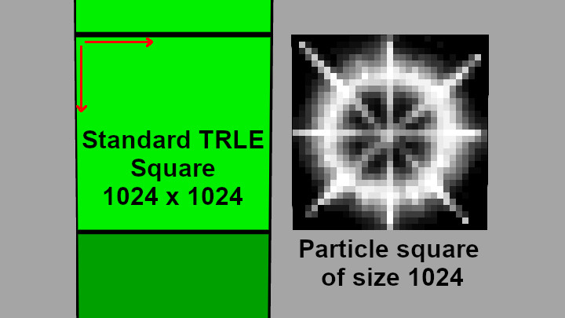
Why all this sudden talk of some abstract squares, though? Well, it’s because with sprite particles, the sprite texture is mapped onto such squares which will always face the camera.
The apparent size of the particle will depend on what parts of the sprite’s texture are visible and which are transparent. If you have a tiny 4x4 white dot in the middle of an otherwise black or magenta 128x128 sprite texture, it will also be visible as a relatively tiny dot in game. Hence it’s not possible to make a general statement about how big a particle will appear with a given size, as it will greatly depend on the sprite texture itself. It is only possible to objectively describe the size of the square onto which the sprite texture is mapped. You must arrive at the right size to use through trial and error, unless you standardize your sprite textures somehow. Be aware that whenever I refer to particle size within the whole tutorial series, what I actually mean is this particle square size. But for brevity, I will always say particle size, actually meaning the square size from here on out.
Also worth noting, the resolution of the used sprite texture does not affect the size of the square. A 16x16 texture and 128x128 texture, assuming they come from the exact same rescaled texture, will appear the same size on the squares. Only the texture resolution is affected, so the 16x16 can look more blurry, while the 128x128 texture will be more sharp in comparison (or more pixelated vs. more high-res if you have bilinear filtering disabled).
That’s the theory, but what do we actually put in the init function? There is not one single size property to a sprite particle, but three in total. These are sizeStart, sizeEnd and sizeCust.
sizeStart is the starting/initial particle size. As a particle lives through its lifetime, it will linearly transition to sizeEnd.
sizeEnd is the ending/final particle size, when the particle reaches its end. If we set sizeEnd equal to sizeStart, naturally the particle should remain a constant size throughout its whole existence.
sizeCust is a field used exclusively in update functions. It overrides whatever is the current size to a custom value. Setting it inside init functions serves no purpose, so we will ignore it for now.
Let’s try giving the particles a sizeStart of 150 and the same sizeEnd. We can always adjust it later, if we decide that it’s too big (or too small) for our purposes:
local function dustInit()
local part = createSpritePart(dust) -- create a particle of "dust" group
The second version can be very useful if the value set for sizeStart is not a known in advance constant value, but a result of some calculation or function. If we would like to use that exact same value for sizeEnd, we can accomplish that with this approach.
How about we give some coloration to our dust particles? Before we do, we should remind ourselves about how computers understand RGB color values.
If you ever worked with any graphics on a computer (even in MS Paint), you perhaps know that most electronic devices, computers too, understand color as a combination of 3 primary colors: Red, Green and Blue. In the case of 24-bit color depth, for each of the three color channels we can assign a value between 0 and 255, telling the computer how much of each primary color to add to the final color. With this, you can create nearly any color you can think of. By convention, 0 means no color for that channel, while 255 means the maximum amount of color for that channel. From this, we can conclude that an RGB of (0, 0, 0) would be pitch-black. On the opposite end of the spectrum, an RGB value of (255, 255, 255) would be completely white. In between is almost every other color visible to the human eye.
How do we translate this knowledge to particles? Sprite particles have 3 color fields:
colStart
colEnd
colCust
These 3 fields work by analogy to sizeStart, sizeEnd and sizeCust, meaning that particles begin their life with colStart, transition towards colEnd, while colCust can override the color in update functions.
These color fields are further comprised of three subfields: r (for red), g (for green) and b (for blue). Each subfield can hold integer values between 0 and 255. To access the subfields of some color field, such as colStart, we do the following:
part.colStart.r -- amount of red 0-255
part.colStart.g -- amount of green 0-255
part.colStart.b -- amount of blue 0-255
and by analogy we do the same for the colEnd and colCust fields. We will encounter a similar nested structure with position and velocity soon, so you should familiarize yourself with this chained dot syntax to access the subfields of some main field.
Anyway, what kind of color should we use? To be honest, this is a completely subjective matter and there is no right or wrong here. Choose a color that you personally feel looks right. This is also further complicated by the fact that the intensity of the color will depend on the sprite texture itself. With standard black-and-white sprite textures, the color will be less intense for pixels that are closer to black and more intense for pixels closer to white. With the exact same color values, the pixels with a medium grey color will appear fainter than pixels with a bright white. Along with size, color is another property which needs trial-and-error, depending strongly on the sprite texture itself.
Since we want to make dust, I came up with this as a rather “dusty” color: RGB (150, 120, 85) . But of course, you can go with something completely different, it’s your effect! Let’s give the particle our chosen RGB color values:
local function dustInit()
local part = createSpritePart(dust) -- create a particle of the "dust" group
part.colStart.r = 150
part.colStart.g = 120
part.colStart.b = 85
end
By the way, this method of specifying each color field separately is perfectly valid. But I will let you in on another secret: we can use an API function that will create our desired color in just one single line of code, by passing the color values to it: colorRGB(r, g, b). Using this function, we achieve the exact same result as above:
local function dustInit()
local part = createSpritePart(dust) -- create a particle of the "dust" group
Which do you prefer? The former method is more verbose and explicitly states what value is assigned to each color channel. The latter is more concise, with a bit less typing. Use whichever you feel more comfortable with and makes sense to you, it’s all the same.
By analogy to sizeEnd, colEnd will be the final color of the particle at the end of its life. For now, let’s keep it simple and have it be the same color as colStart. Instead of setting the RGB values individually this time, we can use the assignment operator directly on the colEnd field to achieve this in a single line of code, like so:
local function dustInit()
local part = createSpritePart(dust) -- create a particle of the "dust" group
The following thought might have crossed your mind – what if I gave my particles a very dark color, near-black or pure black?
Good question. Such particles would appear invisible or near-invisible in game. This is because by default, sprite particles use the color-additive blending mode. This means that color values are added on top of whatever color is in the background. If you were to use a color like pitch-black this would add nothing on top of the background color, hence it would not be visible. Particles fresh from createSpritePart() start out with this (0, 0, 0) default color, so until we change it, we won’t be able to see them.
Sprite particles can have blending modes other than additive, such as subtractive, which allows particles to have dark colors! Blending mode settings can be changed in the additional properties of particle groups, which I will be discussing in one of the upcoming chapters.
At last, we are facing the challenge of giving our particles a spawning position in the 3D world. How do we do that, though? This is also a very good question, actually.
There are several different ways to tackle this, some more sophisticated than others. We will begin with the least sophisticated of these approaches, which is also the most straightforward one. We will obtain the coordinates of Lara at some position in the level, with Diagnostic= ENABLED and DiagnosticType= DGX_LARA added in the [Options] script section of the NG script.
When we launch the level, we will see the Diagnostic information printed on screen. Move Lara to a position you’d like to see particles in (using DOZY if necessary) and note down the displayed Cx, Cy and Cz coordinates somewhere.
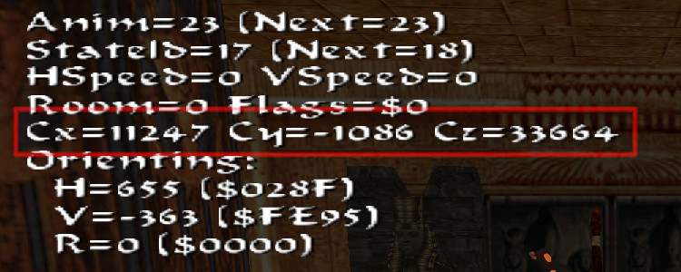
Got them? Great, now let’s assign these coordinate values to our particles back in Lua.
Particle position is a vector quantity, accessed through the field pos. It also has a nested structure with subfields, just like RGB colors. You may even be able to guess what these subfields are, they’re x for the X coordinate, y for the Y coordinate and z for the Z coordinate. They hold floating-point numbers which represent the position of the particle in the 3D world (there are exceptions to this as well, but again, it will become relevant later).
part.pos.x -- position X coordinate
part.pos.y -- position Y coordinate
part.pos.z -- position Z coordinate
If you have much familiarity with the TRLE engine, you may know that the positions of objects in the engine are represented by integers values and not float values. How can this be then, that the particles use float numbers for positions? It’s because they exist (mostly) outside of the TRLE engine (they really reside in the plugin DLL). Therefore, they don’t have to abide by the TR engine’s rules, generally speaking. Only when necessary, these float coordinates are rounded towards the nearest integer to play well with the rest of the game engine.
Anyway, Lara’s coordinates we got from the diagnostics are integers, and integers can (sufficiently) be represented by floats, at least within the range of possible position coordinates on the level map. So, let’s give it a go (these are the XYZ coordinates I obtained, I will assume you have your own):
local function dustInit()
local part = createSpritePart(dust) -- create a particle of the "dust" group
part.pos.x = 11247
part.pos.y = -1086
part.pos.z = 33664
end
If you are on the lazy side (like me) and you’re wondering if there is a shorthand version like with the colorRGB() function, but for position vectors – you bet there is!
Alrighty then, let’s check if we have everything we need to make the particles visible to us, at least in theory. Size – check! Lifetime – check! Color – check! Position – check! Wait a second, we forgot to specify a sprite texture we want to use for the particle, didn’t we? By default, the particle would use the sprite texture at index 0, which is the smoke sprite texture in DEFAULT_SPRITES:
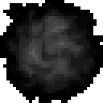
This can actually work as a passable dust cloud sprite, lucky us! But for the sake of example, let’s explicitly set it to 0, it’s good practice to do so. The particle field responsible for setting the texture is called spriteIndex, which can hold an integer value between 0 and 32767, corresponding to the sprite ID in the DEFAULT_SPRITES slot:
local function dustInit()
local part = createSpritePart(dust) -- create a particle of the "dust" group
part.spriteIndex = 0 -- "smoke" sprite texture
end
Oh look, the Copy button made its first appearance! But you’ve been carefully typing each line of code by hand this whole time, right? ;)
I want to make note here of a rather cool implication of the spriteIndex property, which is that you can set different sprite texture variations for the same group of particles (even select them at random, we will discover how in the section right after this one). This was not really possible to accomplish in FLEP without a separate OCB setting.
Looks like we’re all set, then. I’m sure you’re eager to see the particles in the game, I know I am! This is the moment we’ve all been waiting for, time to run the level and look around for any signs of particles spawning (make sure you first saved your script file, though)!
I don’t know about you, but I see something! Sadly, it appears there is only one particle being spawned. Or rather, all of the spawned particles are concentrated in one, single spot. This does makes sense, though. After all, we’re giving all of the formed particles the same XYZ position, so of course they will all be appearing in the same spot.
What can we do to solve this? We’d need a way of giving each particle a randomized position within a certain range. Fortunately, this is fairly simple.
The particle API provides two premade random number functions. These functions are randint(min, max) and randfloat(min, max). Both of these functions will give you a new random number each time you call them.
They both work in a similar way, giving a random number between the min and max values, inclusively. The distinction between them is that randint(min, max) gives you only integer numbers between min and max, while randfloat(min, max) gives any floating point number within that range. Both are immensely useful, though, and you will soon realize that they’re a must-have for nearly any effect imaginable.
How to apply the random functions? Let’s say we want to randomize all 3 position coordinates (X, Y, Z) a bit. We can create 3 temporary local variables anywhere above the piece of code that assigns coordinates to the pos vector, and to those variables we assign random numbers within a certain (min, max) range.
Let’s call our variables dx, dy, dz (or whatever name you like, doesn’t matter). We will use the randfloat() function, but since we’ll be working with numbers considerably beyond the “decimal” range, we could interchangeably use randint() with no noticeable difference. Say we want a randomized range of -512 to 512 on each of X, Y, Z. This should work out to make our particles spawn randomly within a box of 1024 x 1024 x 1024 world units (since -512 to 512 covers a total distance of 1024 units). We therefore do something like this:
local dx = randfloat(-512, 512)
local dy = randfloat(-512, 512)
local dz = randfloat(-512, 512)
We should now have a different random number in each of the 3 variables dx, dy, dz. Let’s add these variables to respective position coordinates of the particle:
part.spriteIndex = 0 -- "smoke" sprite texture
end
Let’s see what that looks like in game…
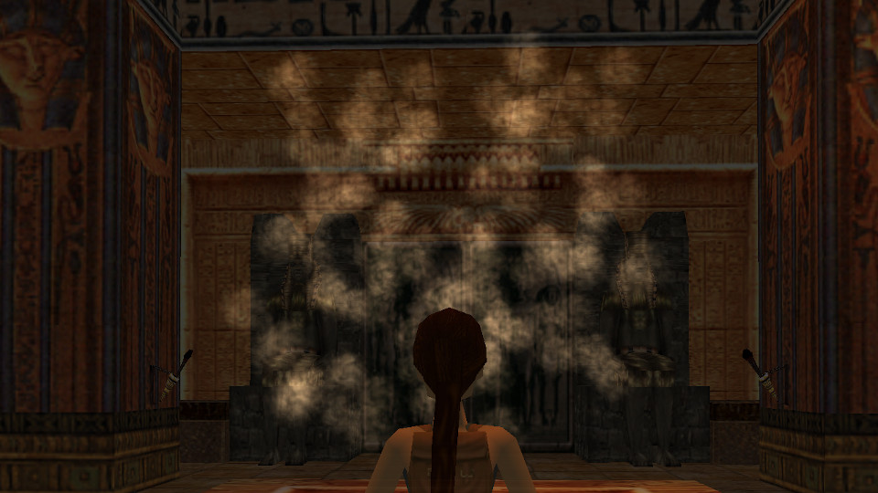
Yup, it’s looking considerably better already. It’s rough around the edges, but it could even pass as a half-decent volumetric effect as it stands now… okay, maybe not. We can surely make several more improvements to give it some polish, though!
Since we are now aware of this possibility, let’s just use the random numbers wherever. In real life, dust clouds are hardly the same size all across. Let’s recreate that in our dust particles and give them some size variety. We will use the randint() function for it this time, since size requires integer values:
I chose a random size between 150 and 300, but you can go with something different. One thing I want to emphasize is the line right below. Here, we have written:
part.sizeEnd = part.sizeStart
instead of
part.sizeEnd = randint(150, 300)
Do you know why? I mentioned that the random number function gives you a new number each time you call it. Since in this case it would be called a second time for sizeEnd, you’d most likely get a different sizeEnd from sizeStart. Which is not a bad thing by any means, but if we prefer to keep the particle size consistent, we have to copy the value we got for sizeStart. Note that this could just as well be solved with another temporary variable, like so:
One more thing that we can do with size to make the dust effect look more appealing is to make the particles expand a bit over time (this will simulate the dust gradually dispersing through the air). This can be easily done by giving sizeEnd a multiplied value of sizeStart (perhaps 2 or 3 times). If you are not sure what to do, here is the answer:
part.sizeStart = randint(150, 300)
part.sizeEnd = part.sizeStart * 3 -- make dust slowly expand over time
How about we also randomize our dust color a bit while we’re at it? Maybe something like this:
part.spriteIndex = 0 -- "smoke" sprite texture
end
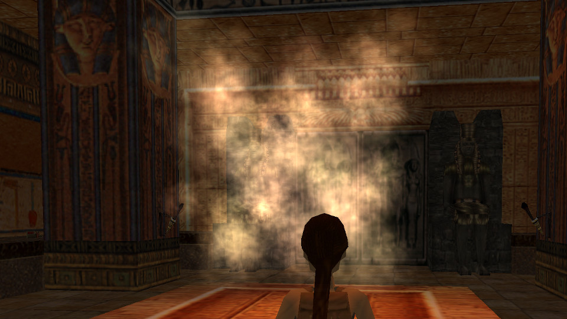
I think giving random variation to the particle properties gives an organic character to the effect. Hence why I consider random number functions to be a necessity when working with particles.
The effect is getting better and better, but you probably already noticed how sharply the particles pop in and out of existence – it’s quite jarring. Also, the expanding sprites overlap each other, which paired with the additive blending makes them far too bright. Can we do something about that? Certainly!
Time to introduce two new fields: fadeIn and fadeOut. Both store an integer between 0 and 32767.
The fadeIn parameter tells us how many in-game frames (since its creation) the particle will fade from black (0, 0, 0) to its (current) color. Because black is completely invisible with additive transparency, it effectively makes the particle smoothly materialize.
The fadeOut parameter is like the inverse of fadeIn – it tells us how many frames the particle will take near the end of its life, to fade from its current color to pure black (0, 0, 0), vanishing into thin air.
Both of these parameters serve to smoothen out the transitions for a particle being spawned and a particle reaching its end, respectively. Let’s try setting a value of 30 frames (1 second) to both parameters. This way the particles should fade in for 30 frames, remain at their brightest color for 60 more frames, and then fade out for the final 30, for a total of 120 frames (the value of lifeSpan). Of course, the fadeIn and fadeOut values don’t need to be equal, you can set something different for each.
local function dustInit()
local part = createSpritePart(dust) -- create a particle of the "dust" group
part.lifeSpan = 30 * 4 -- 30 frames * 4 = 4 seconds
part.sizeStart = randint(150, 300)
part.sizeEnd = part.sizeStart * 3 -- make dust slowly expand over time
There is something still bothering me about the particles, they seem rather… static? Real dust usually drifts slowly in some direction. There’s no way to avoid it anymore, introducing: particle velocity!
Velocity, accessed through the vel field, describes how much the particle will travel on each axis (X, Y, Z) on each frame. It’s therefore also a vector quantity, like position. And just like position, it has x, y, z subfields. Let’s give the particles randomized velocity components on each axis:
local function dustInit()
local part = createSpritePart(dust) -- create a particle of the "dust" group
part.lifeSpan = 30 * 4 -- 30 frames * 4 = 4 seconds
part.sizeStart = randint(150, 300)
part.sizeEnd = part.sizeStart * 3 -- make dust slowly expand over time
part.spriteIndex = 0 -- "smoke" sprite texture
part.fadeIn = 30 -- fade in for 1 second
part.fadeOut = 30 -- fade out for 1 second
end
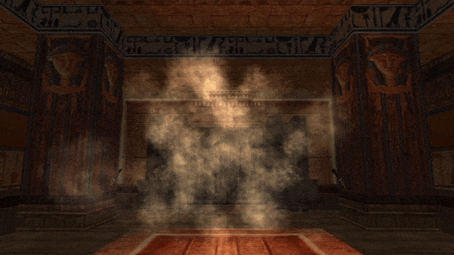
I picked a random range of -5 to 5, but you can have a different one of course. It also doesn’t need to be symmetric either, you can make it biased in some direction, for example:
Yeah, our dust effect is not that bad already, but it’s still missing something… oh, got it! Ever notice how the smoke/fire sprites in the game slowly rotate clockwise or counter-clockwise? Perhaps we can do the same for our “dust” sprites.
The rot particle field describes the angle of the particle’s rotation. At 0, it means zero rotation, the particle texture should appear in the same orientation as in the sprite slot (DEFAULT_SPRITES). But what about other angles? Is the rotation expressed as degrees? No… it is with great pain that I have to inform you – it is not in degrees. It’s… in radians…
“*groans*”
“…why???”
“Wait, what are radians?”
I know, I know, controversial decision. Those familiar enough with mathematics know what radians are. They are an alternative way of measuring and expressing angles (apart from degrees) and are often used in mathematics and engineering. But they are also known for being less intuitive than degrees, at least at first.
When using radians, everything is based around the number π (pi). You know, 3.141592…
An angle of 180 degrees is exactly π radians. From this, we infer that a 90 degree angle is π/2 (half of pi) and a full 360 degree angle is 2*π (two times pi). With this measure, we can express any angle that we could with degrees, it’s only as if the “unit” has changed.
The pressing question you may have is why choose radians over the more familiar and easy to understand degrees? There is a simple reason – computers handle radians better. In fact they were designed to work with radians instead of degrees. So while degrees seem better for us, radians are better for computers. This isn’t to say that you can’t make computers understand degrees as well, it’s just that internally they prefer radians for performing calculations. Specifically, in the case of computing values for trigonometric functions, like sin() or cos(). And we will be coming into contact with these exact functions more than once during our journey with particles.
All this is to say that rot and rotVel will use radians as well. But don’t give up if you hate radians, I hate them too. This is why the API provides functions for converting between degrees and radians, both ways. These are the degToRad() function for going from degrees to radians, and radToDeg() function for going from radians to degrees. If radians give you a hard time, you may use these conversion functions as a communication tool between you and the computer when it needs radians, but you only know how to use degrees.
Anyway, to get back to the topic of particle rotations…
Before the rant about radians, I said that rot expresses the rotation of the sprite texture for the particle. What about rotVel? It’s an abbreviation for rotation velocity (i.e. angular velocity), or in other words, by how much the rotation angle is changed on each frame. This allows particles to spin around, clockwise or anti-clockwise.
One more thing to note about rot is that it will wrap around when going beyond 2 pi radians, or 360 degrees, coming back to 0 again (which should not surprise you if you know your angle maths). The same goes for rotVel by the way, although I don’t see why you would ever want to use such huge spinning velocities in the first place.
For the sake of being easier to follow, let’s use the aforementioned conversion functions so we can specify degree values for rot and rotVel.
We want the particle to start out with a random initial rotation. How can we go about this? We can say that we first want a random amount of degrees between 0 and 359 (360 would be the same as 0, so we go one less). Let’s do just that:
local degrees = randint(0, 359)
Having our degrees, let’s call the degToRad() function with degrees as the argument and assign the result to rot:
local degrees = randint(0, 359)
part.rot = degToRad(degrees)
And we’re done! If we run the level, we should observe that each particle receives a different rotation (it may be a bit hard to notice).
Now let’s talk about rotVel. We want the particle to spin slightly, but not too fast. Of course, everyone will have a different idea for what is deemed “too fast”, but I will suggest we go with a speed of 3 degrees per frame. Actually – let’s make it a random value between 2 and 4 degrees. We’ll use randfloat() this time, since the range is on a smaller scale, so we will benefit from the in-between float numbers:
local rotspeed = randfloat(2, 4)
We use degToRad() again to assign the random amount of degrees to rotVel:
local rotspeed = randfloat(2, 4)
part.rotVel = degToRad(rotspeed)
After test it in the level, it seems to be working. But all the particles are spinning in the same clockwise direction, whereas we would like some of them to spin anti-clockwise too. What should we do now?
We can take a simple approach and extend the range in randfloat() to generate values also in the negatives:
local rotspeed = randfloat(-4, 4)
This will result in some particles spinning clockwise and others anti-clockwise. But some will also have no rotation speed (or close to none). This is just a consequence of the random range going through 0, some of these random values will inevitably end up near 0.
Solving this by yourself requires generating a random integer between 0 and 1 and using an if conditional statement to check if we got 0 or 1 (basically simulating a coin flip, “heads” or “tails”). If it’s 0 (heads) we assign the value of randfloat(2, 4) to rotspeed directly, otherwise if it’s 1 (tails) we negate the value just before assigning it back to rotspeed. I have decided to postpone conditional statements until just the very next section. But this doesn’t mean that we are left unable to accomplish this right now.
I present yet another nifty function – randomNegate() which takes a value and does this 50/50 coin flip for you, returning either the value you gave it, or its negative, with an equal chance for either to happen. This is the perfect solution for having the rotVel be positive half of the time and negative otherwise.
Let’s wrap our randfloat(2, 4) call inside a randomNegate() call, like so:
-- generate a random value between 2 and 4, negate it half of the time
local rotspeed = randomNegate(randfloat(2, 4))
Perhaps this way of writing it is not very clear to some readers. What’s going on here is that first, the inner randfloat() function gets called and returns its value. Then immediately, this returned value gets passed as an argument itself to randomNegate(). If you still can’t wrap your head around this (ha, see what I did there?) allow me to write out the equivalent code, but broken down into individual parts:
local rotspeed = randfloat(2, 4) -- generate a random value between 2 and 4
rotspeed = randomNegate(rotspeed) -- take the value of rotspeed and negate it half of the time
This achieves the same thing as the earlier example, it’s just split into individual steps. If you do not understand such “wrappings” of function calls, or you don’t feel comfortable with it, it’s completely fine to write your code the second way.
Let’s wrap it all up (okay, I’ll stop…) with the whole init function again:
local function dustInit()
local part = createSpritePart(dust) -- create a particle of the "dust" group
part.lifeSpan = 30 * 4 -- 30 frames * 4 = 4 seconds
part.sizeStart = randint(150, 300)
part.sizeEnd = part.sizeStart * 3 -- make dust slowly expand over time
part.spriteIndex = 0 -- "smoke" sprite texture
part.fadeIn = 30 -- fade in for 1 second
part.fadeOut = 30 -- fade out for 1 second
-- randomize rot and rotVel
local degrees = randint(0, 359)
part.rot = degToRad(degrees)
-- generate a random float between 2 and 4, negate it half of the time
local rotspeed = randomNegate(randfloat(2, 4))
part.rotVel = degToRad(rotspeed)
end
And check out how that looks like in-game.
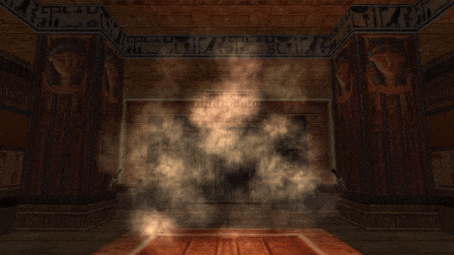
Seems like it’s working as intended, awesome!
Note 2: this section is a tad more challenging and may take some resilience to get through it. However, I strongly believe the payoff with what you learn thanks to it makes this worth it, don’t skip this one!
Though this is also a subjective matter, I think the way the particles spawn at the moment is a bit too “condensed”, the particles should be spread out more (you may disagree, like I said it’s subjective). But assuming that we agree on this, I will tell you about the ways to modify the particle density and spawn rate.
We can do one of the following, or both:
increase the dimensions of the volume in which the particles can spawn (by increasing the random range of the position randomizing variables dx, dy, dz in our script);
make the particles spawn less frequently (i.e. not on every frame).
The first point should seem rather straightforward, we can do that by increasing the min-max range on the randfloat() calls. Let’s try increasing it to (-1024, 1024) for dx and dz, making the effective volume a box of dimensions 2048 x 1024 x 2048.
local dx = randfloat(-1024, 1024) -- 2048
local dy = randfloat(-512, 512) -- 1024
local dz = randfloat(-1024, 1024) -- 2048
Easy-peasy. Now, although the same amount of particles spawns as before (1 per frame), the spawn area is more spread out. Hence, there is a smaller average density of particles per unit of space.
Regarding the second point, however – how do we make particles spawn less often? The init function is called once a frame, after all.
Yes, it is true, the init function will be called once per frame. Nobody said it must spawn a particle on each frame, though.
In the section right before this one, when talking about generating clockwise and anti-clockwise rotation velocities, I quickly alluded to using if conditional statements, without actually providing any code examples for it. In the end, we opted to use the readily available randomNegate() for this purpose.
This time, instead of pulling out a magic function like a rabbit out of a hat, I will properly detail how to make if conditions and decisions based on them in our scripts. Recall the Lua Crash Course section on if conditions. You will greatly benefit from refreshing this knowledge now.
Probability-based spawn rates
Remember that we have our random number functions? What would happen if we spawned a new particle only under the condition that the result of randint(1, 6) was equal to 3, for example? We would get a 1 in 6 chance of the particle spawning a given frame, as with rolling out a 3 with dice. Or randint(1, 2) being equal to 1, as with a coin flip giving “tails”. To accomplish this, we need to make some small changes inside our init function.
First of all, at the very top of dustInit(), before we even call createSpritePart() and assign the particle to the part variable, we can create a new variable. We’ll give it the name dice. To this variable we assign the result of randint(1, 6), which will be our random integer between 1 and 6.
local function dustInit()
local dice = randint(1, 6)
local part = createSpritePart(dust) -- create a particle of the "dust" group
-- remaining function code here
end
I will proceed to describe how we can construct our if conditional statement around the dice variable. There are in fact two ways of going about it, both leading to the same outcome.
First of all, let’s answer the question - when should our particle spawn? Whenever we “roll out” a 1 with dice. It doesn’t matter if we chose 2, 3, 4, 5 or 6 instead, since there should be an equal probability that we get any of these six possibilities. We’ll go with 1 for our example, anyway.
As for the two ways of writing the if condition, we can view this problem from two complimentary points of view:
we want to spawn the particle only if the value of dice is 1 (dice == 1)
we want to skip further execution of the function (which includes spawning the particle) if the value of dice is anything apart from 1 (dice ~= 1).
I hope it makes sense to you how both of these viewpoints effectively lead to the same outcome and are equivalent to each other.
Let’s analyze setting up the if condition with the sentiment from the first point. We of course need the if keyword first. Then we describe the condition, dice == 1. And after that, the keyword then:
local function dustInit()
local dice = randint(1, 6)
if dice == 1 then -- if we rolled out a 1
local part = createSpritePart(dust) -- create a particle of the "dust" group
-- remaining function code here
end
To do everything in our single dustInit() function, what we would need to do now is move the whole rest of the code (getting the new particle instance and initializing the fields) into the body of the if condition. Lua does not care about indentations (unlike, say, the Python language), it only cares if the code is between the then and end keywords. But if you are pedantic about indentations and prefer to maintain a readable coding style, that will require adding a lot of extra indents to a large section of code.
We’re lazy, so we can do something a bit smarter to avoid that. Let’s make a completely new function belowdustInit(). We can name it something like dustInit_dice() (or whatever tickles your fancy):
local function dustInit()
local dice = randint(1, 6)
if dice == 1 then -- if we rolled out a 1
local part = createSpritePart(dust) -- create a particle of the "dust" group
-- remaining function code here
end
local function dustInit_dice()
end
We will move the dice variable and if condition from dustInit() into this new function, and remove the same variable and if condition from the dustInit() function, since we no longer need it there:
local function dustInit()
local part = createSpritePart(dust) -- create a particle of the "dust" group
-- remaining function code here
end
local function dustInit_dice()
local dice = randint(1, 6)
if dice == 1 then -- if we rolled out a 1
end
In the body of the if, we simply call our original dustInit() function, then terminate the if condition with the end keyword:
local function dustInit_dice()
local dice = randint(1, 6)
if dice == 1 then -- if we rolled out a 1
dustInit() -- call our original init function
end
end
One last thing we need to do to make this work is to replace the init function we use for our dust group in createGroup(dustInit, nil) with this newly made dustInit_dice function (if by this point you forgot we even had that whole thing in our script, I don’t blame you, but indeed it’s still there).
dust = createGroup(dustInit_dice, nil) -- passing nil in place of our dustUpdate
Now all that’s left is to try it out in-game.
Yes, the spawn rate has definitely gone down. A bit too much, perhaps. Back in dustInit_dice() we should try out swapping the randint() range on dice from (1, 6) to (1, 2). This will result in a 50/50 likelyhood of spawning the particle. If we really want to, we can also change the name of the variable to coin to reflect that.
local function dustInit_dice()
local coin = randint(1, 2)
if coin == 1 then -- if we got "heads" on the coin
dustInit() -- call our original init function
end
end
Alright, we will settle for this spawn rate.
This method of checking a randomly generated integer is based on probability, which results in an average spawn rate of about 1 particle per 6 frames for the “dice” probability (or 1 particle in 2 frames for the “coin” probability). This is only true when averaged out over a certain period of time, though. In one exact moment it’s not possible to estimate if we get a particle to spawn or not. There’s a very small, but not impossible chance to get 8 frames with spawned particles in a row or no particles for 10 frames, according to rules of statistical probability.
Interval-based spawn rates
The subject matter of spawn rates based on probability brings the question:
Is there a technique to spawn particles in a consistent, precise interval, e.g. 1 particle every 5 frames?
Yes, this is also possible, through an API function called getGameTick(). This function does not accept any arguments and it returns the number of game ticks (game frames) that have elapsed in-game since starting the current level. Importantly, this tick counter doesn’t go up while in the inventory or pause screen. It is, however, saved in save games, so when you reload the save, it will bring you back to wherever the game tick counter was during the save. This getGameTick() function has a multitude of different uses and we will be coming back to it frequently in our upcoming particle projects. For now, we will use it to get a precise particle spawning interval.
The idea is simple, we perform a remainder (or modulo) operation on the value returned by getGameTick(), where the dividend (the number to the right of the modulo operator) is the desired spawn interval, in frames.
We will reuse our dustInit_dice() function, but we will change a few things about it. We may rename our dice / coin variable to interval. Let’s go for an interval of 1 particle per 15 frames, or one every half-second (since there are 30 frames to a second in this engine). We make the following changes:
local function dustInit_dice()
local interval = getGameTick() % 15 -- get the tick counter value and get remainder from division by 15 (our interval)
if interval == 0 then -- on every 15th frame
dustInit() -- call our original init function
end
end
If you are unsure of what the modulo operation does here, it will return the remainder (the “leftover”) of dividing the game tick counter by 15. It will be a value between 0 and 14, inclusive, assigned to interval. When we check if interval is equal to a specific value in that range (like 0), this condition will then be true only (and exactly) once every 15 frames.
After running the level, we see that the particle is indeed spawned precisely every 15 frames, or once per half-second. From this it is easy to get any other interval, all you need to do is change the value after the modulo operator when calculating our interval value.
Spawning multiple particles per frame
To make our life easier with limiting particle spawn rates, we have create a “master” function dustInit_dice(), for which the sole purpose is to decide when to spawn a dust particle and call the original dustInit() function to spawn one. While for dustInit(), its only job is to spawn and initialize a new particle of the dust group. This method of distributing one job per function is a good approach, indicative of well-written code. This is because you can immediately tell what each function is responsible for (assuming you also named your functions appropriately with their performed tasks), without having to think too much about it. On the contrary, if we mushed everything together into one big function, it would obscure the whole picture and you would have to remember that this “monster” function is responsible for many different jobs. Of course, this was a trivial example that is not too terrible, but in general, you should prefer to delegate (ideally) one job to each function, it results in cleaner and clearer code. Again, keep in mind that functions exist for a reason and are there to assist in writing code more efficiently.
Once we have recognized that the dustInit() function is an executable unit that spawns a single dust particle on demand, it’s trivial to modify dustInit_dice() to spawn several particles per frame. You simply call dustInit() however many times is required inside the master dustInit_dice() (if you need to spawn particles in the tens or hundreds, preferably use for loops).
local function dustInit_dice() -- spawn 3 dust particles in one frame
dustInit()
dustInit()
dustInit()
end
And that’s all there is to it. We can see an immediate benefit from modularizing code into functions that each perform a single job.
Okay, time for a moment of honesty. The original spawn rate of 1 particle per frame did not bother me at all. You’ve been bamboozled yet again, this whole section was just my cunning, evil tactic to explain how you can modify the particle spawn rates (muahahaha)!
Nonetheless, I hope that after working through all these examples, you now know how you can achieve such things. Both the probability-based and interval-based approach will be making an appearance again in later chapters, but with genuine reasons (I promise)!
You can keep using the dustInit_dice() function if you indeed prefer to reduce (or increase) the spawn rate of the dust particles, otherwise we can just restore the good old dustInit in the call to createGroup().
We are slowly approaching the end of this beginning chapter on particle effects. We have certainly learned a lot already over its course, but there is still one last thing I want to show before we conclude it. Last, but certainly not least, as it’s also very important and it will become even more significant in later chapters.
When we were giving our particles a position, we grabbed the coordinates of Lara from some place in the level. You might agree this is a rather awkward process. Specifying position this way is not very flexible, either. What if we want to change the position of the effect, do we need to grab new coordinates with the Diagnostics? Or if we want to spawn our dust particles also in another spot, do we need to create new particle groups dust2, dust3 and replicate the dustInit() function, with changed coordinates for each group?
No, this would be a ridiculous thing to do whenever we want to place the same effect somewhere else.
If you are familiar with how FLEP smoke emitter particles work, you are aware that they are spawned from SMOKE_EMITTER_WHITE and SMOKE_EMITTER_BLACK nullmesh objects, with particle properties tied to the settings of a given OCB number in the patches. Anyway, this allowed to spawn the particles depending on where the nullmesh was placed, after it was triggered. This emitter system is much more convenient since it allows you to place the same effect in several spots. It would be awesome if we could have that with our dust particles, wouldn’t it?
Yeah, you already know where I’m going with this, so let’s cut to the chase.
Particles have two specific properties / fields, that of the emitterIndex and that of the emitterNode. We will not cover the emitterNode in this section, but I will say a thing or two about emitterIndex.
Specifying the emitterIndex in the init function ties the particle’s position to an emitter item. What is this emitter item? It can be any moveable object in the level. Yes, you heard me correctly, any moveable item can serve as the particle emitter. It can be a nullmesh, it can be an enemy, it can be a trap, pushblock, pickup or animating. It can even be Lara herself. What kind of index does this emitterIndex field expect, though? It is sadly not the NG script index, but rather the internal tomb4 item index (there are specific reasons for this which will become apparent at some point). However, do not fret, as the API has a function that resolves this easily. The function getTombIndex() takes an integer value of the NG index for the moveable and converts it to the corresponding tomb4 item index (if a moveable with the given NG index exists, otherwise it returns -1).
Differently than other fields, the uninitialized emitterIndex field starts out with value -1 and not 0. This is because 0 is also a valid tomb4 index that any item in the level could have. If emitterIndex has the uninitialized -1 value, the position coordinates given to the particle are interpreted as global coordinates in the level. On the other hand, when emitterIndex is set to a valid item index in the init function, the particle’s position coordinates will be relative to that item.
To illustrate this with a specific example, if the particle has been assigned position coordinates (X: 256, Y: -768, Z: 512), the particle will spawn offset by those position coordinates from the emitter item’s current position in the level. The particle position vector is then the X, Y, Z offset from the emitter item’s position. If the emitterIndex is not set to a valid index, though, the particle will normally spawn at the global world coordinates (X: 256, Y: -768, Z: 512).
This simplifies setting particle positions considerably, as it is enough to specify the emitterIndex and the offsets from the emitter’s position in the pos vector, the particle system will work out the rest. This permits to mimic FLEP particle emitting nullmeshes. And what’s more, it works for any moveable item, not just SMOKE_EMITTERs. This means you can have enemies or Lara spawning particles into the level, without the need for weird workarounds of copying the item position to the emitter nullmesh with TRNG scripts, as with FLEP smoke emitters. Cool!
Of course, there is more to the FLEP smoke emitters. Which particles are spawned depends on the OCB number. Also, the particles spawn only when the emitter nullmesh has been activated by a trigger. This is all possible to recreate in the particle system as well, but it’s a topic for the later chapters, where we will delve into getting a moveable item’s properties, such as the OCB or checking its activation status (triggered / untriggered). Additionally, we will learn how to make all items of a given slot spawn the particles (instead of just one chosen item).
In this section I will signal only the very basics of using emitterIndex, which is making the particles spawn at a selected object’s position. Let’s say we have an nullmesh item placed somewhere, such as a CAMERA_TARGET (or any other moveable item, for that matter). What must we do to get the dust particles to spawn around it?
We must get its NG script index value first. In NGLE, this is displayed as the number in parentheses ( ) when highlighting a placed object. In TE, this is displayed as the ID value in square brackets when an object is selected, e.g. [ID = 12].
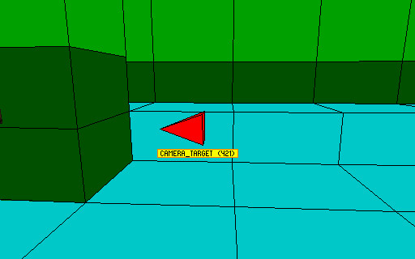 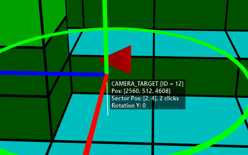
We take this number and pass it as an argument to the getTombIndex() function. We then assign this to the emitterIndex field.
part.emitterIndex = getTombIndex(12) -- get tomb4 item index of item with NG index 12
There is one more thing we should do, which is removing the old coordinates written down from Diagnostics. They are no longer needed, as the particle system calculates the global spawn position by itself when the emitterIndex gets specified. We simply assign the random values of dx, dy and dz variables directly to the pos vector. Here is how the whole init function will look like:
local function dustInit()
local part = createSpritePart(dust) -- create a particle of the "dust" group
part.emitterIndex = getTombIndex(12) -- get tomb4 item index of item with NG index 12
part.lifeSpan = 30 * 4 -- 30 frames * 4 = 4 seconds
part.sizeStart = randint(150, 300)
part.sizeEnd = part.sizeStart * 3 -- make dust slowly expand over time
part.spriteIndex = 0 -- "smoke" sprite texture
part.fadeIn = 30 -- fade in for 1 second
part.fadeOut = 30 -- fade out for 1 second
-- randomize rot and rotVel
local degrees = randint(0, 359)
part.rot = degToRad(degrees)
-- generate a random float between 2 and 4, negate it half of the time
local rotspeed = randomNegate(randfloat(2, 4))
part.rotVel = degToRad(rotspeed)
end
once we try it out, we should see the dust particles spawn around our chosen object.
As one more little trick, I will show you how to get this particle effect to follow Lara wherever she goes. Yes, we could just write down the NG index of the LARA object from the level map and call getTombIndex() on it, that will work. But specifically for our dear Lara, you don’t need to do this. The API provides the getLaraIndex() function which returns the tomb4 index of Lara directly, without the need for the getTombIndex() function. All you need to do is make this small change:
part.emitterIndex = getLaraIndex() -- get Lara's item index
We obtain a cloud of dust particles that constantly spawn in Lara’s vicinity based on where she is.
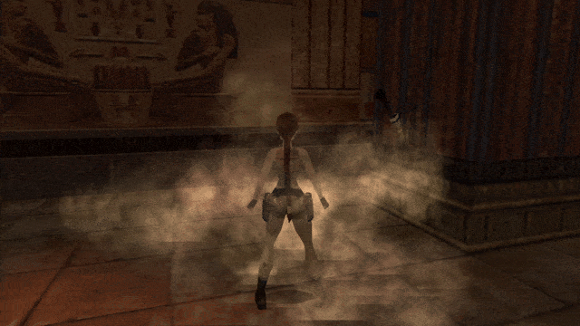
Although we had some hiccups at first, we have created a rather decent “dust cloud” type of effect in the end. Some of you may have hoped to get a different kind of dust effect, however. One that would be more suitable for the interior of an old house instead of a desert or ancient tomb. If you’re not content with the one we’ve made together during the previous sections, try this one out as the final treat of this chapter!
local function dustInit()
local part = createSpritePart(dust) -- create a particle of the "dust" group
part.spriteIndex = 14 -- "dot" sprite texture
part.fadeIn = 30 -- fade in for 1 second
part.fadeOut = 30 -- fade out for 1 second
-- randomize rot and rotVel
local degrees = randint(0, 359)
part.rot = degToRad(degrees)
-- generate a random float between 2 and 4, negate it half of the time
local rotspeed = randomNegate(randfloat(2, 4))
part.rotVel = degToRad(rotspeed)
end
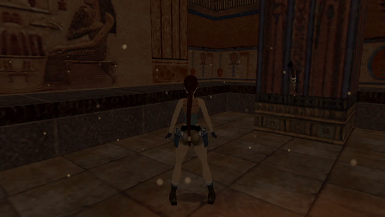
This one has a much smaller particle size, a slightly dimmer color, a larger spawning domain (4096 x 2048 x 4096) and uses a different sprite texture (14 instead of 0). I believe it makes for a passable “room dust” effect, would you agree? Feel free to use it in levels and tweak it to your liking!
We’ve managed to cover all the basics of particle scripting. Great job, you should be proud of yourself for sticking around to the very end!
As I said in the beginning, this first chapter was going to be very long. There was no way around it, however. I tried my best to explain scripting in the particle API as clearly as possible. Apart from that, as you have witnessed for yourself, the particle system Lua API is very feature-dense and packed with lots of fields and functions. Yet, we’ve still barely scratched the surface of what’s to come, as we have not even dealt with particle update functions (and they get even crazier than init functions, trust me)!
I truly hope you were able to grasp the fundamentals of particle scripting after working through this chapter and got something out of it. I am also hoping that you were able to recognize just how much more powerful Lua scripting is, when compared with the FLEP smoke emitter patches. It enables you to customize nearly every imaginable aspect of how the particle effect should work and look like, down to the smallest level of detail. I strongly encourage you to do some more experimenting with the capabilities of the particles, now that you have seen the basics. Create more particle groups and try fiddling around with different sprite textures, colors, sizes, setting different velocities, etc. As a challenge, you may try to replicate the effects from the screenshots below. they all use the standard DEFAULT_SPRITES textures and can be achieved only
with what we have learned in this chapter.
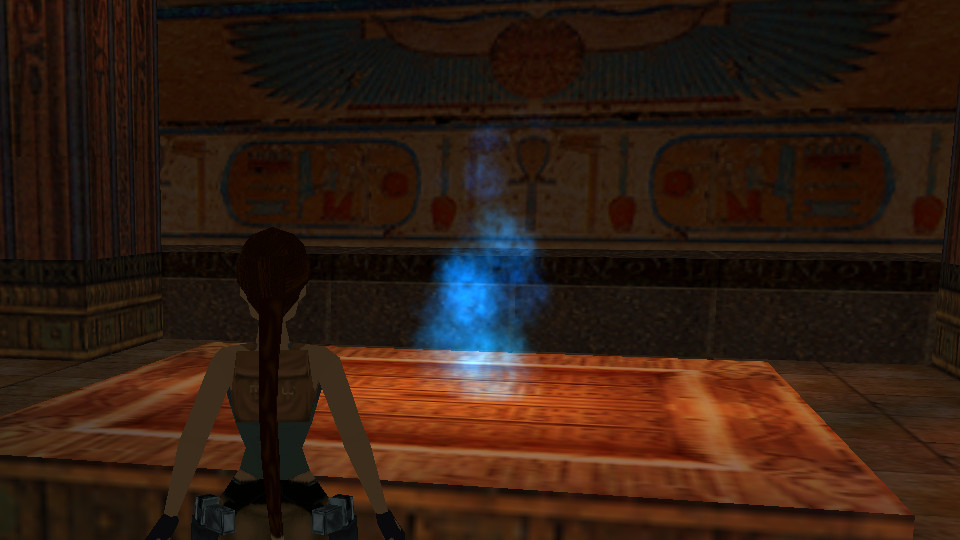
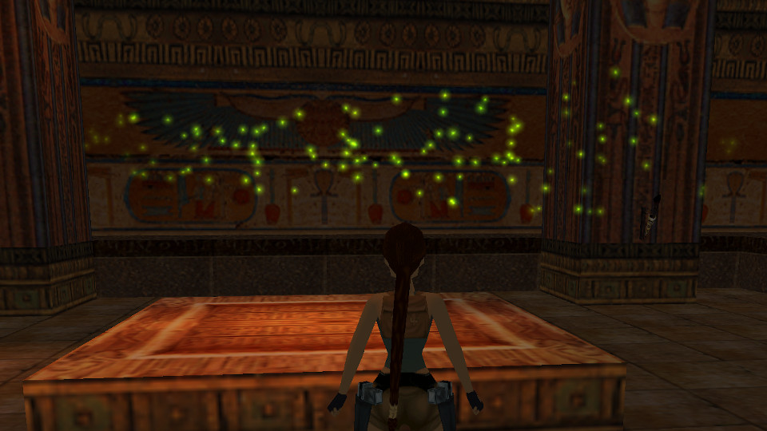
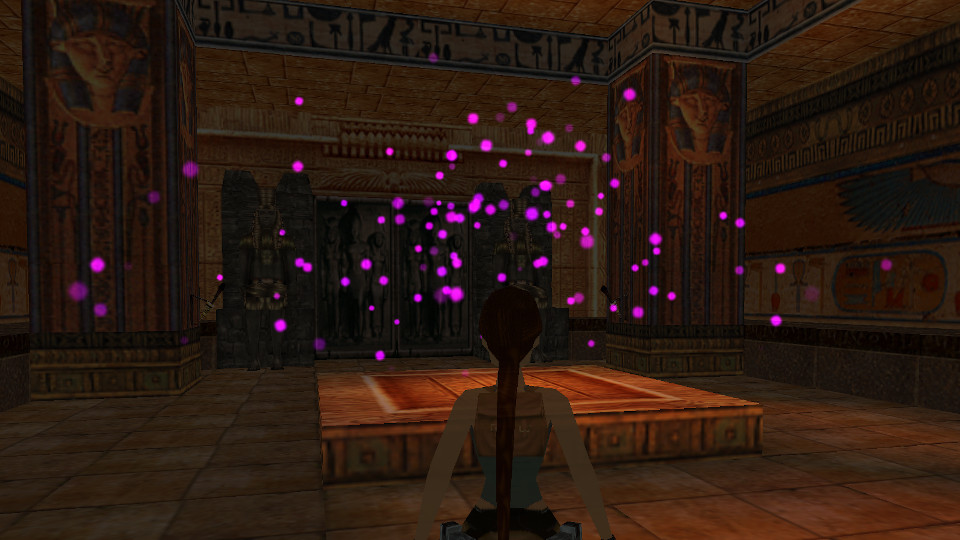
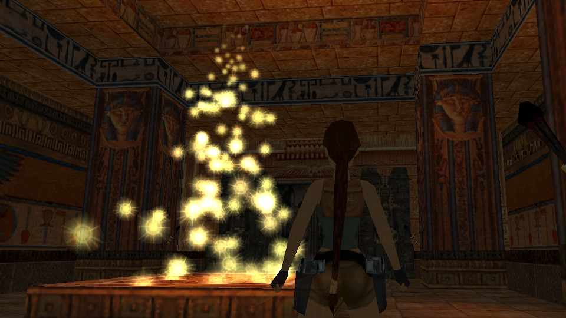
See you again in the upcoming mini-chapter, where we discuss some remaining sprite particle properties and a few neat tricks you can still do with init functions by themselves. Until next time, have a blast scripting your particles!